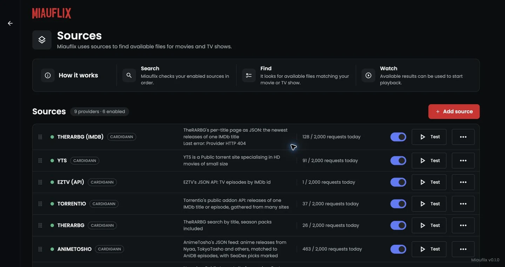
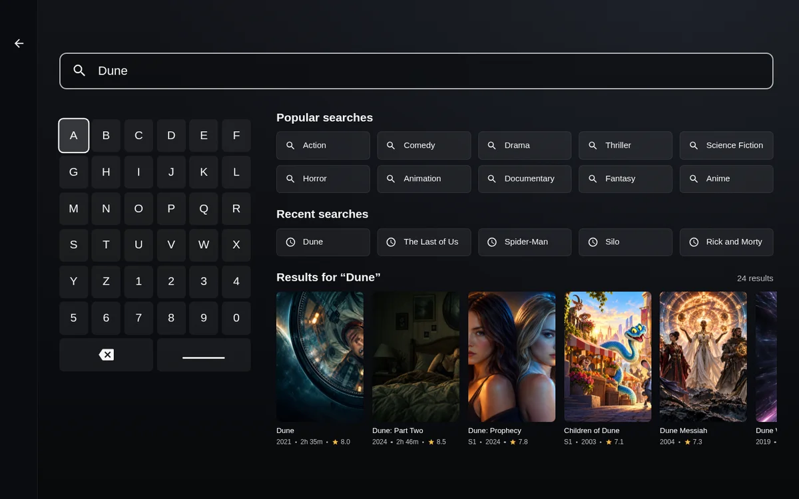
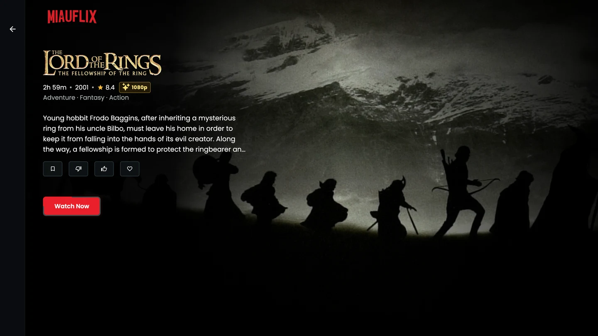
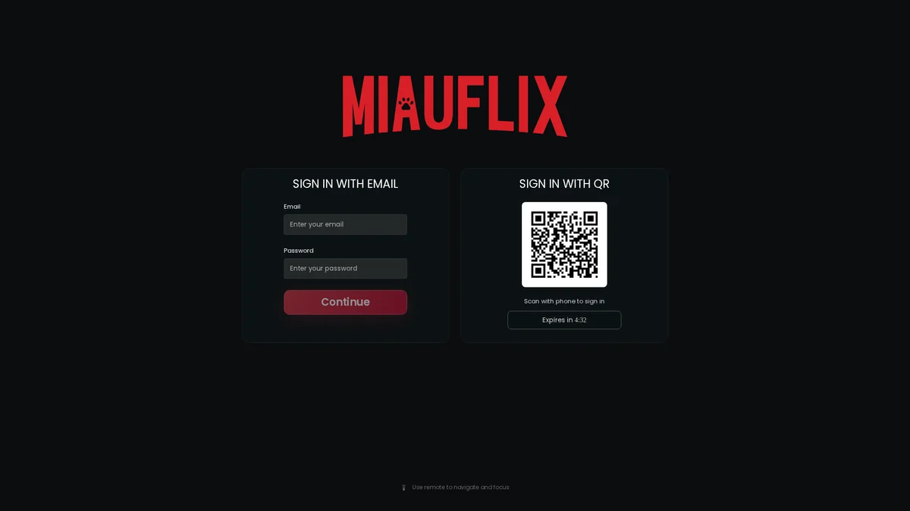
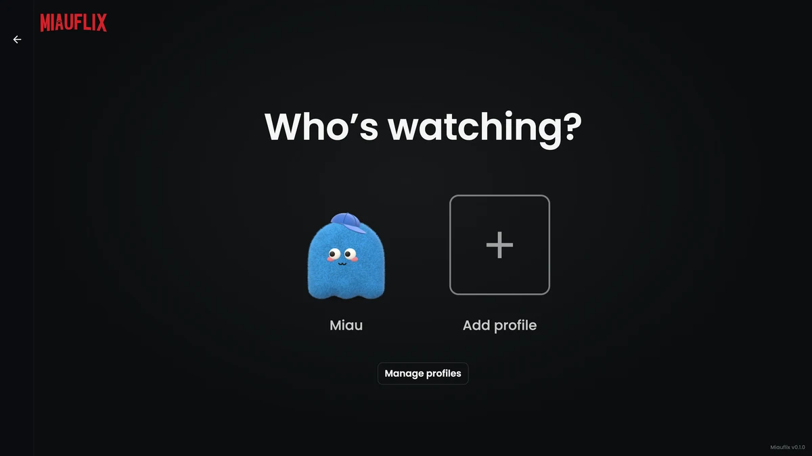
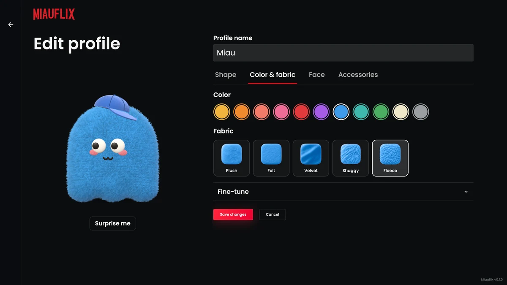

Miauflix features
Make movie night your own.
Find something to watch, settle in, and let your server take care of the stream.
Bring your own sources
Your sources.
Your choice.
Start with built-in providers, connect Jackett or Prowlarr, or run your own compatible source service in Docker. Miauflix’s HTTP service contract lets you build your own integrations.

Find your next favorite
Something good.
Always within reach.
Explore movies, TV shows, and anime in one place. Search by name, discover new titles, or pick up a favorite from your watchlist.
Explore browsing {{icon:arrow}}

From discovery to play
All the details.
One Watch Now.
Get the story, artwork, ratings, seasons, and episodes. Miauflix automatically finds a suitable source and prepares it for your device.
Keep your place with Continue watching, and make movie night yours with audio and subtitle controls.
See how playback works {{icon:arrow}}Made for the couch
Big screen.
Small effort.
Settle in and navigate with a keyboard or remote. Sign in by scanning a QR code with your phone, then get back to what you were watching.
Use your browser, or install the dedicated app on a supported Samsung TV.
Samsung TV setup {{icon:arrow}}
A little more you
Your profile. Your personality.
Choose who’s watching and keep your own watchlist and progress. Make your Plushie avatar yours with shapes, colors, fabrics, faces, and accessories.

